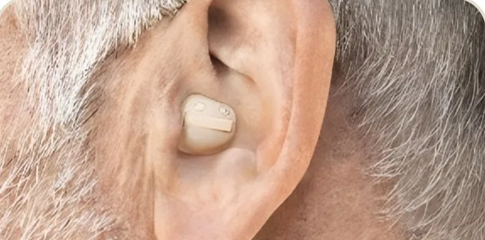
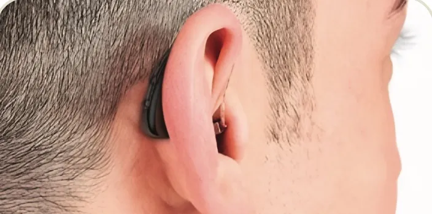
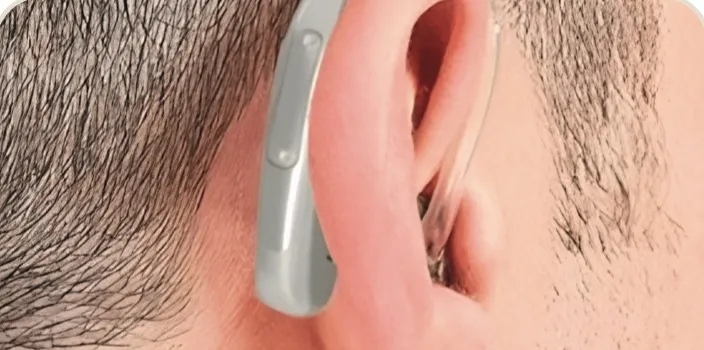
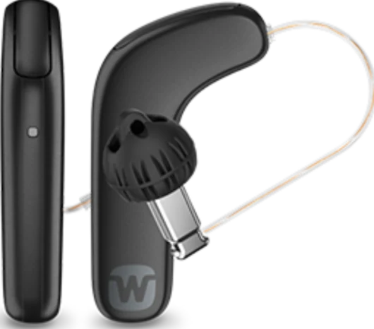
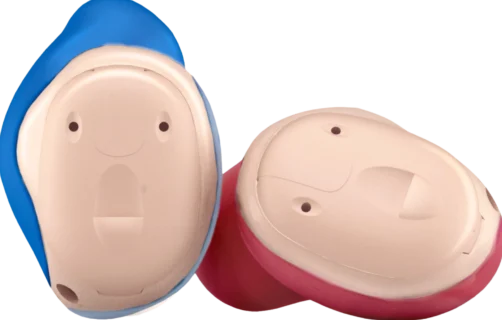
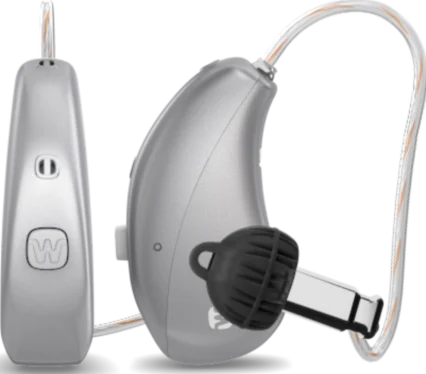

Widex Allure
Uma das linhas mais recentes da Widex, desenvolvida com foco em uma experiência sonora mais natural.
Formato: receptor-no-canal
Agendar avaliação gratuitaOPIMED + WIDEX
Compare os modelos Widex disponíveis na Opimed e entenda qual formato e quais recursos fazem sentido para a sua necessidade auditiva.
Som natural, formatos diferentes e conectividade
A Widex tem modelos pensados para quem valoriza uma percepção mais natural dos sons e quer comparar diferentes formatos de aparelho. Na Opimed, você encontra opções usadas dentro do ouvido, receptor-no-canal e retroauriculares.



Aparelhos auditivos Widex
Os modelos variam em formato, recursos e forma de uso. Conheça algumas opções para entender melhor essas diferenças antes da avaliação.
Uma das linhas mais recentes da Widex, desenvolvida com foco em uma experiência sonora mais natural.
Formato: receptor-no-canal
Agendar avaliação gratuita
Modelo receptor-no-canal para quem procura uma opção para o uso diário e quer considerar recursos de conectividade.
Formato: receptor-no-canal
Agendar avaliação gratuita
Modelo usado dentro do ouvido, indicado para quem prefere esse tipo de formato e busca mais discrição no uso.
Formato: intracanal
Agendar avaliação gratuita
Modelo receptor-no-canal com recursos de conectividade para dispositivos compatíveis.
Formato: receptor-no-canal
Agendar avaliação gratuitaOs modelos variam em tamanho, formato e recursos. Na avaliação gratuita, a equipe Opimed considera sua necessidade auditiva, sua rotina e suas preferências para orientar quais opções vale comparar.
Disponibilidade dos modelos e indicação devem ser confirmadas durante o atendimento.
Avaliação gratuita
Na avaliação, você pode conversar sobre as situações em que sente mais dificuldade para ouvir e conhecer os modelos Widex disponíveis para o seu caso.
Atendimento na prática
Dúvidas sobre aparelhos Widex
A Opimed comercializa aparelhos auditivos Widex e possui unidades em diferentes cidades. Você também pode iniciar o atendimento por esta página.
A indicação depende da necessidade auditiva, do formato do aparelho e dos recursos que fazem sentido para a sua rotina. A avaliação gratuita ajuda a comparar as opções disponíveis.
Sim. A linha apresentada pela Opimed inclui opções intracanais, microcanais e receptor-no-canal.
Sim. Alguns modelos oferecem conectividade com dispositivos iOS e Android. A compatibilidade deve ser conferida de acordo com o aparelho escolhido.
O valor depende do modelo e da configuração indicada. A equipe Opimed apresenta os preços e condições disponíveis durante o atendimento.
Agende sua avaliação
Preencha seus dados para que a equipe Opimed dê continuidade ao atendimento.
Fale com a Opimed
Conte para a equipe o que você procura e tire suas dúvidas pelo WhatsApp.